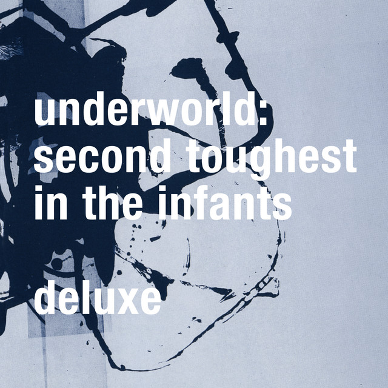

Underworld - Second Toughest in the Infants



Información del álbum facilitada por discogs.com:
Fecha de lanzamiento: 1996
Géneros: Electronic
Estilos: Techno, Breakbeat, Progressive House, Ambient
Pais: UK
Votos: Media de 4.39 con 85 votos
Sello: XL Recordings
Pressed By: DFI
Published By: EMI Music
Distributed By: Vital (2)
Lacquer Cut At: The Exchange
Phonographic Copyright (p): Modular Recordings Pty. Ltd.
Copyright (c): Modular Recordings Pty. Ltd.
Copyright (c): XL Recordings Ltd.
Lacquer Cut By - Mike Marsh
Producer, Arranged By - Bobbydazzler
Tracklist:
Juanita : Kiteless : To Dream Of Love 16:36
Banstyle/Sappys Curry 15:22
Confusion The Waitress 6:47
Rowla 6:31
Pearls Girl (feat. Mike Nielsen) 9:36
Air Towel 7:37
Blueski 2:55
Stagger 7:37